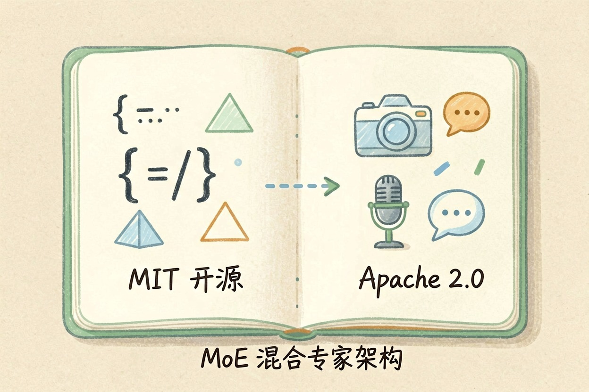
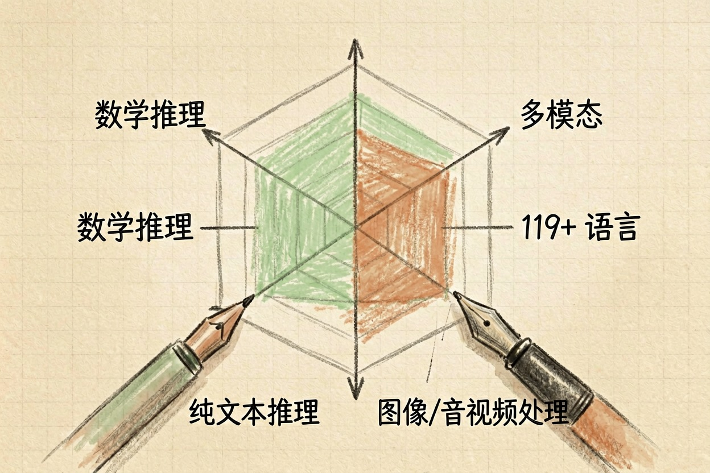

DeepSeek vs 通义千问 Qwen 2026：国产开源大模型全面对比
两款国产开源大模型横向对比，从架构、性能到价格，帮你选出最适合的模型。
DeepSeek vs Qwen 是 2026 年国产开源大模型的双雄。两者均采用 MoE 架构，但在推理、多模态、价格上各有侧重。
关键要点 - DeepSeek 优势在数学推理和代码，MIT 许可证，成本更低- Qwen 优势在多模态、多语言（119+ 种）和生态系统- 两者均采用 MoE 架构，支持百万级上下文处理- 价格差距显著：DeepSeek Flash 每分钟 0.14 美元，远低于 Qwen
DeepSeek vs Qwen 核心差异概览

DeepSeek 由深度求索公司开发，专注数学推理与代码生成，采用 MIT 许可证。它的 R1 模型在数学和推理能力上表现突出，是纯文本模型的代表。
通义千问 Qwen 由阿里巴巴开发，定位为多模态通用大模型，采用 Apache 2.0 许可证。Qwen 不仅支持文本，还能处理图像、音频、视频输入，生态更丰富。
两者都使用 MoE（混合专家）架构，这是当前主流的大模型架构，能高效利用参数规模。
如果想了解国产大模型的更多选项，可以参考 豆包与 Kimi 对比。
性能基准与核心能力对比

根据官方发布数据和公开基准测试，两款模型在核心能力上各有侧重。
对比维度 DeepSeek V4 Qwen 3.7 Max
数学推理 MATH-500 97.3% 强
多模态支持 仅文本 图像/音频/视频
多语言支持 有限 119+ 种语言
长文本处理 1M tokens 1M tokens
许可证 MIT Apache 2.0数学和推理能力是 DeepSeek 的强项。DeepSeek-R1 在 MATH-500 基准上得分 97.3%，在数学和逻辑推理任务上表现突出。
多模态能力是 Qwen 的差异化优势。Qwen 支持图像、音频、视频输入，适合需要多模态理解的应用场景。
多语言能力上，Qwen 支持 119+ 种语言，适合国际化应用。DeepSeek 主要面向中文和英文。
价格与部署方式
API 价格上，DeepSeek 更具优势。根据公开资料，DeepSeek Flash 的 API 价格约为每分钟 0.14 美元，是目前成本最低的国产大模型之一。
本地部署方面，两者均有开源权重。Qwen 的模型规格更丰富，从 0.6B 到 235B+ 多种规格可选，适合不同硬件条件的团队。
国内访问方面，DeepSeek 与通义千问均免费可用，无需额外工具。
想了解 DeepSeek 与 ChatGPT 的差异？可以参考 DeepSeek vs ChatGPT 对比。
选型建议：你该选哪个？
两款模型不是竞争对手，而是适用于不同场景的工具。
选 DeepSeek：纯文本任务、数学和逻辑推理、代码生成、成本敏感的项目。如果你需要强大的推理能力且预算有限，DeepSeek 是最佳选择。
选 Qwen：多模态应用、国际化场景、Agent 开发、需要丰富生态的项目。如果你需要处理图像、音频或视频，Qwen 是唯一选择。
很多团队同时使用两款模型：用 DeepSeek 处理推理密集型任务，用 Qwen 处理多模态任务。
---
总结一下，DeepSeek vs Qwen 的定位差异已经很清楚：DeepSeek 适合推理和代码，Qwen 适合多模态和国际化。选择时不要只看公开基准分数，还要结合自身具体任务评估。不要将敏感数据输入未经验证的平台 API。更多细节可以参考 通义千问 Qwen 详细评测。
本文信息核对于 yes。AI 产品的价格、免费额度与功能变动频繁，实际以各工具官网当前说明为准。